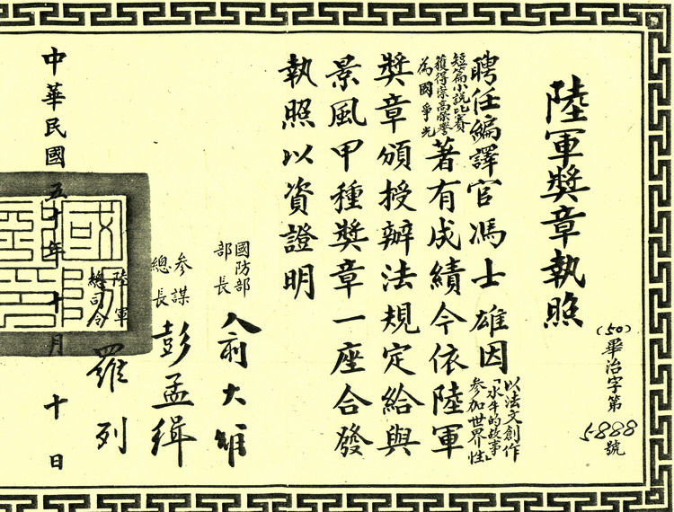
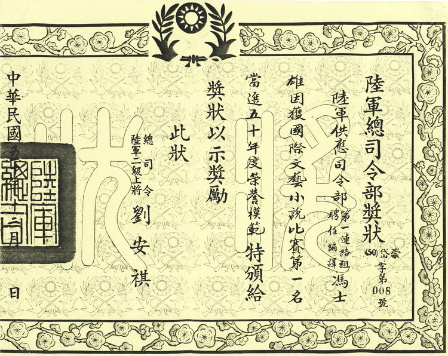
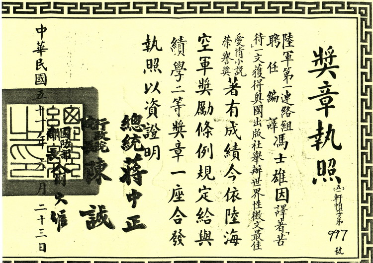
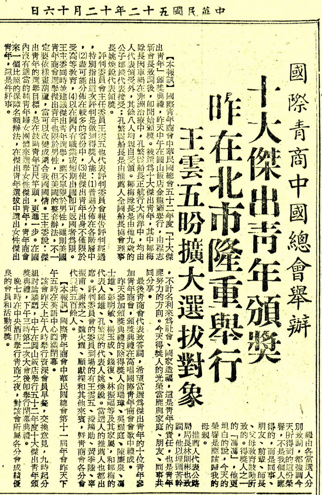
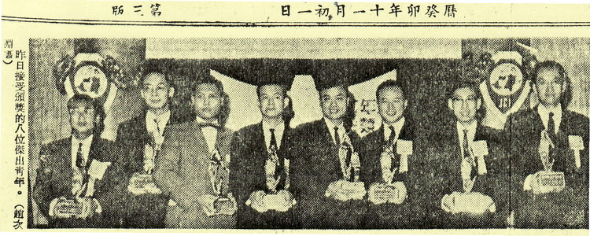

冯冯 ── 传奇一生
| 年度 | 生平事略 |
|---|---|
| 1935年 | 4月5日，出生于广州市。本名冯士雄。 |
| 3岁 | 日军轰炸广州，随母避难香港。 |
| 1938年10月21日，广州陷落。 | |
| 4岁 | 投宿广东潮洲普宁方家新寨，年幼随众拜祭方家祖祠，分得三斤烧猪肉，日后取“方一民”作为笔名之一，感怀记念。 |
| 6岁 | 就读桂林市省立模范小学，跳级念4年级，半年后，日军猛攻桂林，又再上路逃难。 |
| 1941年12月7日， 日军偷袭美国珍珠港。 | |
| 9岁 | 就读曲江市黄埔中正幼年军校，其时冯母张凤仪患了肺痨病，卧病医院，不久又遭日本机群狂炸，大火三十里。 |
| 1945年1月28日，曲江陷落。 | |
| 10岁 | 就读龙南中学，跳级念上初二春季。 |
| 1945年8月15日，日本无条件投降。 | |
| 同年，考入龙川中学高中一年级。 | |
| 1948年 | 9月1日，升上培正中学高三，趁高三上学期举行毕业旅行，与两百名同学坐火车到杭州西湖与上海。 |
| 1949年 | 高三毕业，考上岭南大学医学院。 |
| 10月1日 ，虚报19岁，考入海军军官学校。 | |
| 11月1日 ，乘“昆仑号”抵达台湾。 | |
| 12月12日，在左营海军军官学校被捕，罪名是写信给大陆母亲涉嫌“通匪”“泄秘军机”，被押交海军情报处囚禁于凤山等地。 | |
| 数年后，流浪台北火车站，当起擦鞋童，露宿街头。 | |
| 考取国防部外事编译榜首，任期三年编译预备军官少尉。 | |
| 1955年 | 2月2日 至9月15日，任职美军 MILITARY ASSISTANCE ADVISORY GROUP(简称MAAG)驻台顾问团编译官。 |
| 9月9日，任职6925TH RADIO SQUADRON, MOBILE编译官。 | |
| 1956年 | 6月 ，任职美军MAAG 编译官。 |
| 1957年 | 2月 ，任职美军MAAG SUPPLY DIVISION 编译官。 |
| 1958年 | 12月24日，出席海军军官俱乐部举行圣诞晚宴与舞会。 |
| 1959年 | 1月，海军军官学校补发除名证书，除名原因：“神经失常”。同年，取得身份证户口簿，申请母亲赴台，安家租户于台北中和乡农场猪舍竹棚。 |
| 1960年 | 国防部下召集令，延长役期，进入总统府替蒋介石、蒋经国作法语翻译。 |
| 参与国防会议及与外国元首贵宾翻译英法西等语言，升至上尉。 | |
| 墨人（张万熙）短篇小说【马脚】，膺选奥大利“世界最佳怪异小说选集”英译文稿，即出自冯冯译笔。文坛名将与新晋作家， 结为莫逆之交。 | |
| 1961年 | 以法文撰写“水牛的故事”，膺选奥大利“世界最佳动物小说选集”。 |
| 10月10日，获国防部颁发“景风奖章”。  |
|
| 12月，获国防部颁发“国军模范”荣誉奖状。  |
|
| 1962年 | 以“苦待”一篇获《自由谈》杂志征文奖第一名。 |
| 以英文撰写“苦待”，膺选奥大利“世界最佳爱情小说选集”。 | |
| 6月23日，获国防部颁发“ 绩学奖章”。  |
|
| 出版短篇小说集《微笑》。 | |
| 1963年 | 出版《微曦》。 |
| 12月15日，获国际青年商会颁发首届“十大杰出青年”文学著作成就奖。 | |
| 1964年 | 退役为后备军人，任职美国军事顾问团海军组译员。 |
| 5月3日，以《微曦》一书，荣获嘉新文化基金会首届优良文学作品奖。 | |
| 应石超庸校长，聘请为东吴大学英文系二年级的代课教授。 | |
| 出版意识流小说《青鸟》。 | |
| 10月4日， 任职联合报王惕吾董事长英文秘书。 | |
| 1965年 | 5月，拍摄电影“美目王子”。 |
| 11月8日， 辞退联合报英文秘书一职。9日，乘美国密歇根号从基隆港启航。 | |
| 12月7日，抵达加拿大温哥华定居。 | |
| 1968年 | 出版《昨夜星辰》。 |
| 1972年 | 11月，出版短篇小说集《柯飘湖》。 |
| 1973年 | 6月，再版六十年代短篇小说集《微笑》。 |
| 1974年 | 2月，出版短篇小说集《蒙眼的女神》。 |
| 1976年 | 首度在日本当选为最佳摺纸作品荣誉。 |
| 3月，于香港《内明》佛学月刊发表第一篇永忏楼随笔“也谈舍利子”，陆续发表百篇随笔与特稿，长达十三、十四年之久。 | |
| 出版赫尔曼。赫瑟《释达坦》" SIDDHARTHA " 译着。 | |
| 6月11日，以简易及正确发音为由，更改英文姓名 SHIH HSIUNG FENG为Peter Faun。 | |
| 南下加州营商未成。 | |
| 8月，叩访万佛城。 | |
| 10月，二度往万佛城拜佛。 | |
| 1977年 | 10月，出版《冰崖》，将写实主义与浪漫主义结合作为表现形式，探讨人性、心理、宗教与社会意识观念冲突。 |
| 1980年 | 1月，出版《紫色北极光》。 |
| 第三度在日本当选为最佳摺纸作品荣誉。 | |
| 1981年 | 6月，出版《哭泣的紫枫》。 |
| 同年，出版佛学随笔《夜半钟声》。 | |
| 1982年 | 4月，出版《希望的火炬》。 |
| 7月至10月，与佛友进行天眼通之实验。 | |
| 1983年 | 7月，与佛友恊助以九十万元购入位于唐人街的“基督教救世军大教堂”。 |
| 1984年1月31日，过户宣化长老，名为“金佛寺”。 | |
| 1984年 | 2月2日，申请移居美国万佛城任教未成。 |
| 3月，出版海外搜奇录编撰《不能见光的人》。 | |
| 6月1日，出版《空虚的云》。 | |
| 11月1日，出版《禅定天眼通之实践》。 | |
| 1985年 | 3月1日，于《内明》第156期发表“神通非神通”，回应抨击。 |
| 1987年 | 1月1日，出版《太空科学核子物理学与佛理的印证》。 |
| 5月1日，于《内明》第182期发表“魔见是魔”，再度回应抨击。 | |
| 9月1日，出版《天眼慧眼法眼的追寻》。 | |
| 1990年 | 6月 ，出版《巴西来的小男孩》。 |
| 北京中央交响乐团及合唱团，演奏自修作曲“现代佛教圣乐”。 | |
| 10月，捐献尼泊尔法王所赠佛陀舍利子十颗，与班禅喇嘛赠予后藏日喀则喇嘛宫的法宝之一“佛骨璎珞”108颗，为慈济医院筹款。 | |
| 1991年 | 北京中央乐团演奏自修作曲“D短调第一号钢琴协奏曲”。 |
| 10月25日，应邀在美国洛杉矶市柏沙典那大学剧院登台义演献唱，为慈济医院筹募基金。 | |
| 1992年 | 北京中央乐团演奏“E短调第二号钢琴协奏曲”。 |
| 1993年 | 同上乐团演奏“E短调第一号小提琴协奏曲”。 |
| 指挥家 ：胡炳旭，小提琴：刘云智。 | |
| 1994年 | 6月， 偕母重返睽别近三十载的台湾，参与慈济义演筹款，捐献“再生舍 |
| 利”，与虚云高僧辗转赠予，泰王所赐“缅甸菩提玉石手串”。 | |
| 1996年 | 莫斯科音乐学院首次演奏其作曲“水仙少年”印象派交响诗。 |
| 1997年 | 10月， 偕母抵达莫斯科，在大使与文化部长陪同下，进入克姆林皇宫，谒见俄罗斯总统姚幸与夫人。6日与7日，出席由俄罗斯联邦交响乐团与莫斯科芭蕾舞团联合演出的“水仙少年”与“雪莲仙子”首演，获颁乌克兰国家音乐学院荣誉作曲博士学位证书。 |
| 11月， 偕母抵夏威夷小住7天。 | |
| 1999年 | 10月，入籍美国公民。 |
| 2001年 | 10月， 偕母乘搭火车头等房舱，横越加拿大东西两岸，前往蒙特里尔市的美国大使馆领取母亲移民签证。 |
| 以古诗译黎萨《诀别祖国诗》" Mi Ultimo Adios "。 | |
| 2002年 | 递呈台北“平反会”，申请平反海军情报处非法刑求及囚禁冤狱，编号为6581号。 |
| 2003年 | 7月，冯母张凤仪女士逝世于温哥华寓所，享年九十八岁。 |
| 11月，《雾航》回忆录出版，书中详述不幸的身世，与日军侵略下颠沛流离的童年，亦揭露了五十年代白色恐布压迫与创痛，坦承青年时期的同性情怀。 | |
| 2004年 | 2月，携母骨灰定居夏威夷。 |
| 3月13日，回台湾换发国民身份证，落籍于嘉义市。 | |
| 11月，在台南林凤营小住一个月，重游当年被囚之地。 | |
| 同年，平反申请被拒绝，理由是“查无实证”“所报日期不确”“无任何资料可以证明”“不予补偿”。 | |
| 2005年 | 写作推理小品《趣味的新思维历史故事》，英译《诗瓣 》。 |
| 2006年 | 3月，赴台检查病况，先后经数家医生诊断，及照各种仪器，诊断是由忧郁与紧张引起的肠胃溃疡。 |
| 10月，经夏威夷医生诊断患胰脏癌 ，告之仅余6个月生命。再度赴台诊断，3 次切片检查不出癌细胞，疑是胰脏炎(或胰脏肿瘤)。 | |
| 11月，出版《趣味的新思维历史故事》。 | |
| 12月，出版王祥麟《诗瓣》" Poem Petals " 译诗。 | |
| 2007年 | 4月18日，逝世于台北新店慈济医院 ，享年72岁。 |
| 5月09日，追悼火化。 | |
| 5月10日，骨灰安置台南关庙乡法王讲堂“法界宝塔”。 |
附录：
1963年12月15日，国际青年商会颁发首届“十大杰出青年”新闻


原载中央日报：1963年12月16日
参考资料
出生年份
任职编译官年份
- LETTERS OF RECOMMENDATION (1956──1964)
任职联合报英文秘书年份